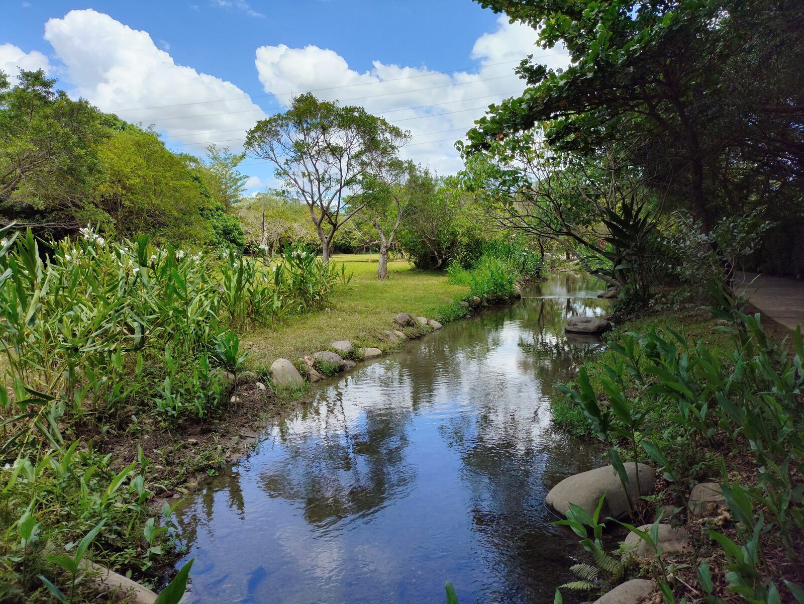
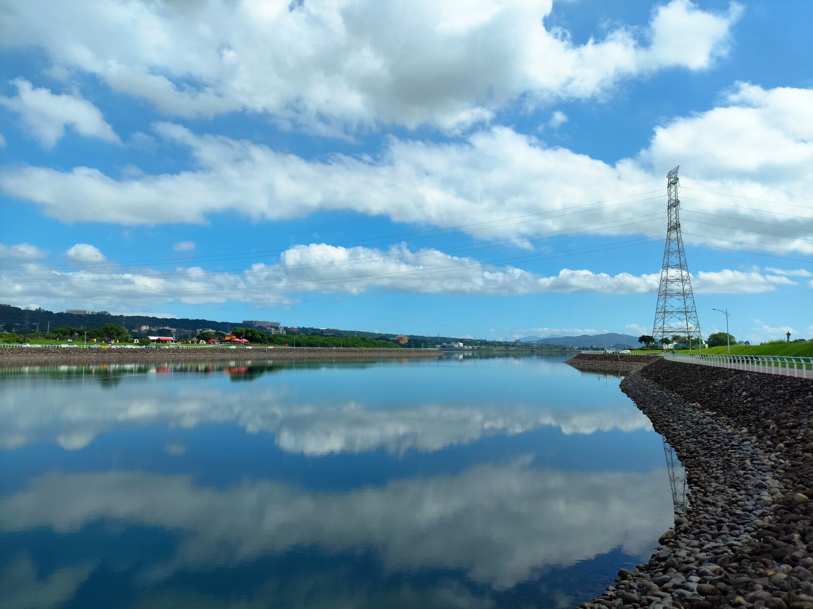
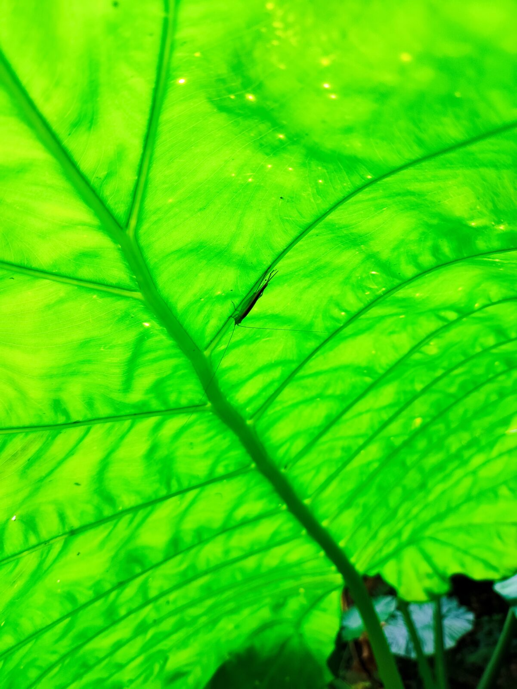
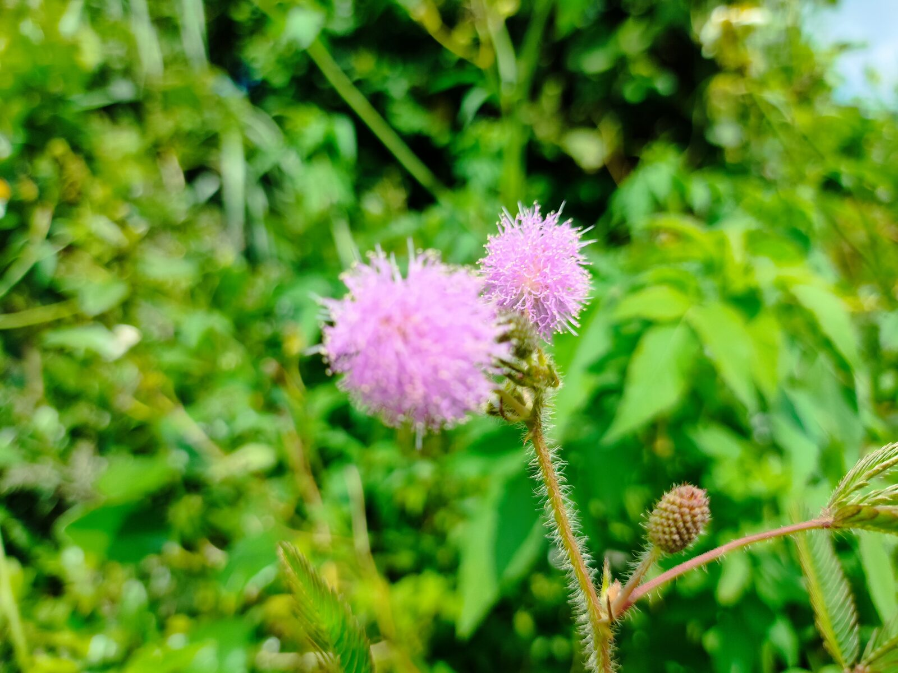

山豬湖生態園區的溪水清淺，兩岸是野薑花與綠葉。石頭被水輕輕包著，倒影把雲也拉進了地面。不需要走得很遠，站在橋邊或步道旁，已經夠把一個下午的節奏放慢。

再往中庄調整池，水面忽然變得寬闊。雲層整片映在水裡，堤岸的石子一路延伸，遠方是山與電塔。這裡的安靜和山豬湖不太一樣：一個是貼近的綠，一個是攤開的藍。

林間的光線穿過葉片，透出幾乎透明的綠。一隻小蟲停在葉脈上，腿細得像線。若不是蹲下來，大概會錯過它。


含羞草在路邊開成一球一球的粉紫，觸碰會合葉的那種。它不佔風景的中心，卻讓這趟散步多了一點熟悉的、屬於台灣夏天的細節。
PLACE NOTE / 山豬湖・中庄
山豬湖生態園區位於新北鶯歌一帶，以生態步道、溪流與濕地環境為主，適合慢走與觀察植物、水鳥。中庄調整池則以開闊水面與環池步道著稱，晴天時雲影倒映特別明顯。兩處距離不遠，可串成半日散步路線；實際開放與天候請以出發前資訊為準。
文章與照片為本次散步的個人記錄；園區開放、步道路線與天候可能變動，出發前請自行確認。